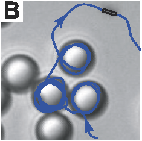
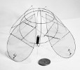
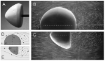
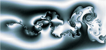
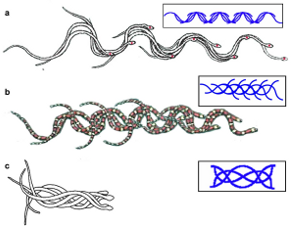
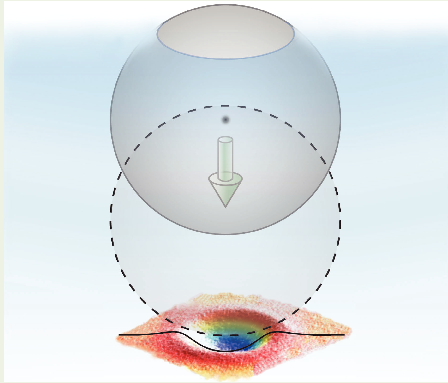
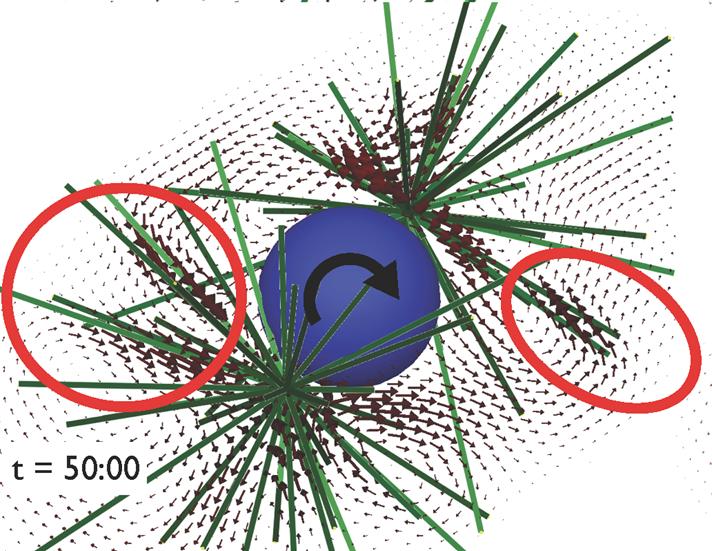
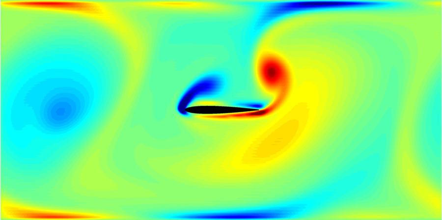
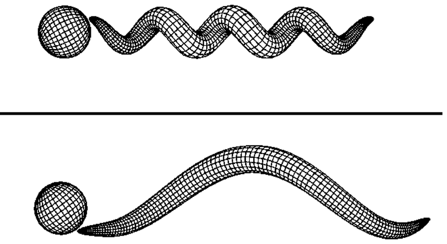

The Applied Mathematics Lab of the Courant Institute is an interdisciplinary research lab whose interests span applied mathematics, physics, and biology, and which uses the tools of experimental observation and measurement, and mathematical modeling, simulation, and analysis. The experimental labs occupy a suite of rooms on the ground floor of Warren Weaver Hall at 251 Mercer street, just one block west of Broadway. The laboratory opened in the Spring of 1998 following a space renovation funded by the Estate of Edward A. Sears and by the Mobil Foundation. The laboratory joins a small but select group of experimental facilities housed within Departments of Mathematics.
The AML is an arena where mathematical theory and numerical simulation collide with experimental observation and measurement. A primary focus of experimental and theoretical research in the lab has been the interaction of flowing fluids with moving and flexible bodies, inspired by biological and geophysical phenomena.





| Support for the AML has been provided supported by the NSF, DOE, and generous benefactors. Details here |